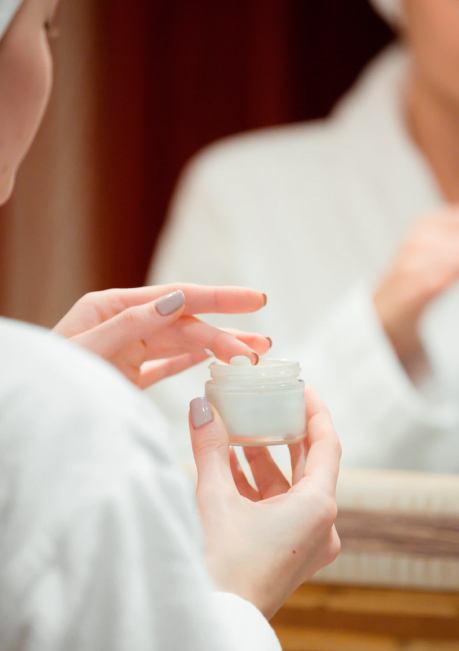
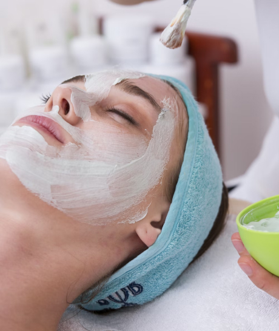

Метрогил ®
Метрогил / Блог / Как обычно лечат акне?
Как обычно лечат акне?

11.12.2022

1 034

5 мин
Лечением акне занимается врач-дерматовенеролог или косметолог. Они можегут направить вас и к другим специалистам –: например, эндокринологу, гинекологу, гастроэнтерологу.
Обратите внимание, что информация в статье носит информационный характер, а лечением должен заниматься специалист!
Для начала врач обследует вас и определит степень тяжести заболевания, исходя из следующих критериев:
- распространенность акне
- глубина процесса
- количество угрей
- влияние на психоэмоциональную сферу
- формирование рубцов
Наружная терапия

Современные наружные препараты воздействуют на основные причины возникновения акне: фолликулярный гиперкератоз, увеличение числа бактерий С.acnes и воспаление кожи.
Для лечения всех форм акне назначают наружное применение ретиноидов – препаратов, снижающих количество кожного сала и образование комедонов.
Одним из таких веществ является адапален 0, 1 %. Его применяют в составе гелей и кремовм 1 раз в сутки на ночь
на чистую сухую кожу, пораженную акне, избегая попадания в глаза и на губы.
Адапален 0,1 % входит в состав средства Метрогил® А для лечения угревой сыпи и комедонов. Метрогил® А снимает воспаление, удаляет комедоны и нормализует выработку кожных жиров.
Эффект адапалена развивается после 4–8 недель лечения, стойкое улучшение – после 3-х месячного курса лечения. При необходимости курс может быть увеличен.
В некоторых случаях из-за кратковременного раздражения кожи сокращают количество аппликаций или лечение приостанавливают до исчезновения раздражения.
Адапален применяется в качестве одного из первых препаратов при комедональных акне, а также в сочетании
с другими действующими веществами (бензоил пероксид, клиндамицин) при других формах акне.
Для лечения акне у взрослых женщин в качестве базисной терапии также рекомендованы ретиноиды.
Системная терапия
Системная терапия включает в себя три основные группы препаратов: антибиотики, ретиноиды и гормональные препараты.
Она назначается только врачами при тяжелом течении болезни с учетом всех индивидуальных особенностей пациента.
Гормональная терапия
Гормональная терапия показана женщинам с выраженной себореей, андрогенетической алопецией, SAHA-синдромом (seborrhea/acne/hirsutism/alopecia)
и другими гормональными симптомами. Лечение проводится после консультации врача-эндокринолога или врача-гинеколога и назначается специалистом этого профиля.
Бережный уход за кожей

Вне зависимости от степени тяжести акне уход за кожей может облегчить ваше состояние.
В сочетании с наружной терапией бережный уход за кожей способен вылечить легкую форму акне.
Однако тщательный уход должен сопровождать и системную лекарственную терапию.
Как ухаживать за кожей при акне?
- Бережно очищать лицо средствами, подходящими вашему типу кожи
- Увлажнять кожу с использованием косметики, восстанавливающей барьерные свойства кожи, и обладающей противовоспалительным действием
- Выбирать косметику без содержания компонентов, раздражающих кожу (спирт, кератолитические средства в высоких концентрациях, альфа-гидроксикислоты, пропиленгликоль, ароматизаторы и др.), а также комедогенных веществ
Информация проверена экспертом
Катханова О.А
дерматолог, венеролог, трихолог
Литература:
- Nobukazu HAYASHI, Hirohiko AKAMATSU. Japanese Dermatological Association Guidelines: Guidelines for the treatment of acne vulgaris 2017. Journal of Dermatology 2018, 11-12, 16.
- Millikan L.E. Pivotal clinical trials of adapalene in the treatment of acne J Eur Acad Dermatol Venereol 2001; 15 (Suppl 3): 19–22.
- Waugh J., Noble S., Scott L.J. et al. Adapalene: a review of its use in the treatment of acne vulgaris. Drugs 2004; 64 (13): 1465–1478.
- Lucky A., Jorizzo J.L., Rodriguez D. et al. Efficacy and tolerance of adapalene cream 0.,1% compared with its cream vehicle for the treatment of acne vulgaris. Cutis 2001; 68: 34–40.
- Cunliffe W.J. Caputo R., Dreno B. et al. Clinical efficacy and safety comparison of adapalene gel and tretinoin gel in the treatment of acne vulgaris: Europe and U.S. multicenter trials. J Am Acad Dermatol 1997; 36 (6Pt2): S126–134.
- Cunliffe W.J., Danby F.W., Dunlap F. et al. Randomised controlled trial of the efficacy and safety of adapalene gel 0,1% and tretinoin cream 0,05% in patients with acne vulgaris. Eur J Dermatol 2002; 12: 350–354.
- Thiboutot D.M., Shalita A.R., Yamauchi P.S. et al. Adapalene gel, 0.1%, as maintenance therapy for acne vulgaris: a randomized, controlled, investigator-blind follow-up of a recent combination study. Arch Dermatol 2006; 142 (5): 597–602.
- Cook-Bolden F. Subject Preferences for acne treatments containing adapalene gel 0.,1%:results of the MORE trial. Cutis 2006; 78 (1 Suppl): 26–33.
- Gold L.S. The MORE trial: effectiveness of adapalene gel 0.,1% in real-world dermatology practices. Cutis 2006; 78 (1 Suppl): 12–18.
- Gollnick H.P., Graupe K., Zaumseil R.P. [Azelaic acid 15% gel in the treatment of acne vulgaris. Combined results of two double-blind clinical comparative studies. J Dtsch Dermatol Ges 2004; 2: 841–847.
- Ю. А. Новиков Ю. А., Е. Ю. Зубарева Е. Ю., Н. Н. Семенова Н. Н., Т. Н. Поляева Т. Н., Е. В. Радул Е. В., О. В. Правдина О. В., Л. Р. Кунгурова Л. Р. «Клинический опыт применения комбинации адапалена 0,1 % и метронидазола 1 % в наружной терапии акне» // Ж, журнал для практикующих врачей «Фарматека». –, 2022.
- И. М. Хисматулина И. М., Е. В. Файзуллина Е. В., Е. С. Гусарова Е. С., Р. Р. Набиева Р. Р. «Результаты наружной терапии акне легкой и средней степени тяжести комбинированными препаратами» //, Клиническая дерматология и венерология. –, 2022; 21 (4): 484-489.
Вас может заинтересовать

здоровье
К какому врачу обратиться с подозрением на розацеа?

психология
«Не хочу смотреть на себя в зеркало» или как справиться с акне

здоровье
Может ли диета помочь при розацеа

КИНО
3 героини с «дефектами» внешности